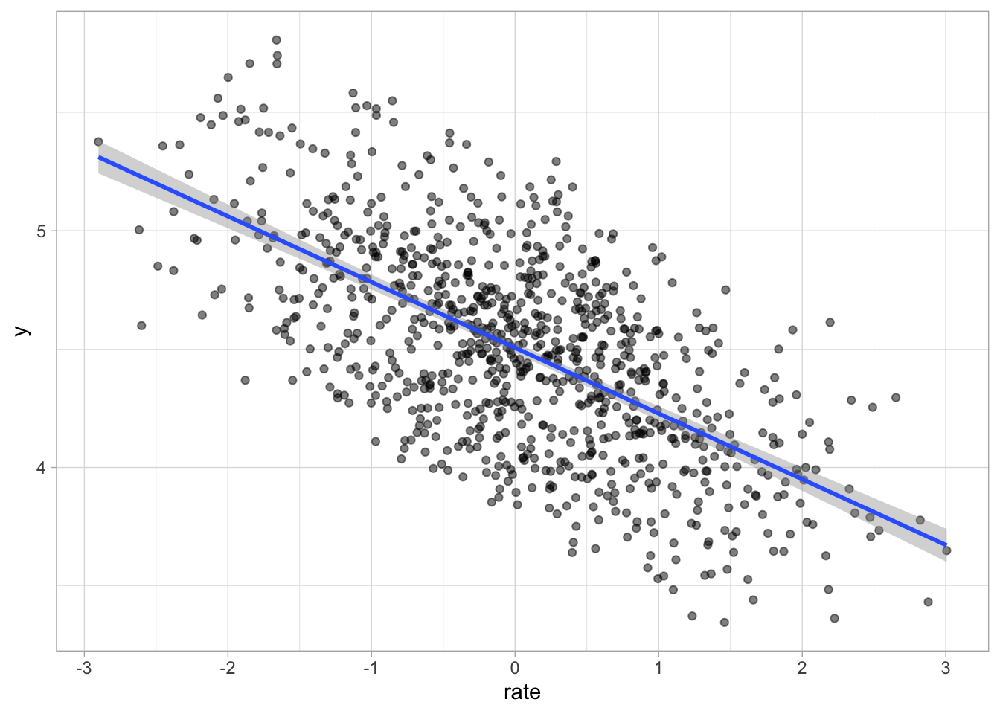
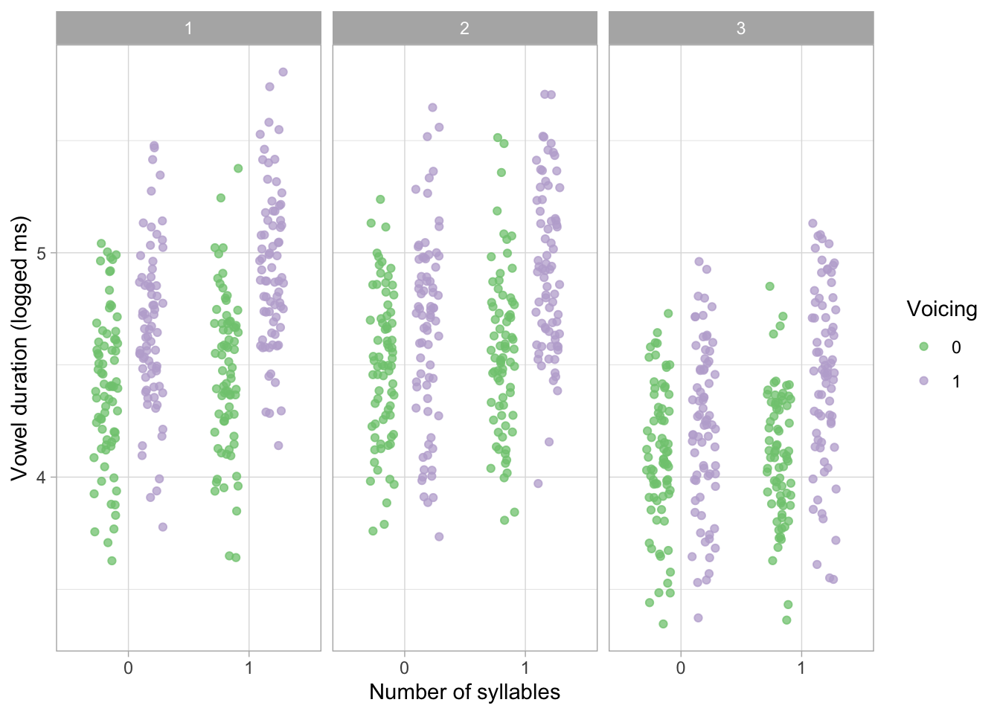
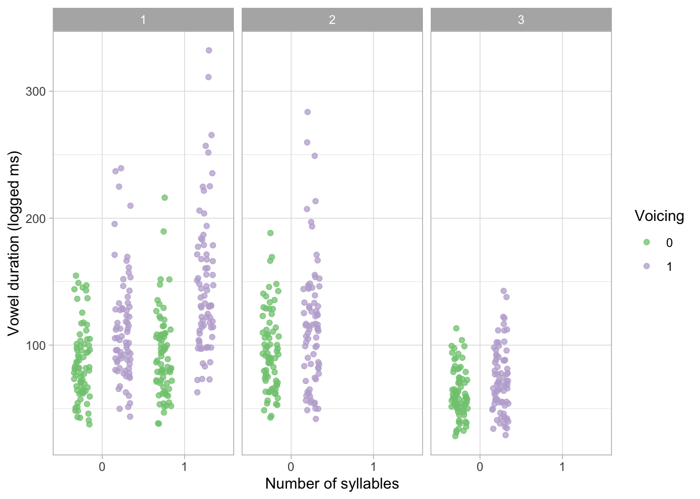

library(tidyverse)
theme_set(theme_light())
library(faux)
library(cmdstanr)
library(brms)
library(posterior)
library(MASS)01-simulate
1 Simulate data
In this file, I simulate data to test the Stan model which will be used to model the actual data from two pre-existing datasets Coretta (2019).
2 Prepare data
This section simulates vowel duration data. The following code sets up the following contextual variables:
P_Lis the number of participants (15) per language.Lis the number of languages (3, in the real data these are Italian, Polish and Mancunian English).Vis the number of voicing contexts of the consonant following the vowel (2, voiceless and voiced).Sis the number of syllabic contexts (2, monosyllabic and disyllabic words).Pis the total number of participants, i.e.P_L * Lparticipants per language times number of languages.P_idis a participant ID.
The following parameters define the regression coefficients and the multilevel hyperparameters:
int_1, int_2, int_3are the intercepts of vowel duration for each language for disyllabic words and voiceless context (we are using logged durations here).voi_1, voi_2, voi_3are the coefficients for the difference in duration between voiced and voiceless contexts in the three languages, for disyllabic words.ratis the effect of speech rate (same for all languages).sylis the effect of monosyllabic words andvoi_sylis the interaction effect of voiced consonants in monosyllabic words.The
sigma_*multilevel hyperparameters define the multilevel SDs for participant for each of the regression coefficients.rhois the correlation between the multilevel hyperparameters.
# Contextual vars
P_L <- 15
L <- 3
V <- 2
S <- 2
P <- P_L * L
P_id <- 1:P
# Regression coefficients
int_1 <- 4.5
int_2 <- 4.5
int_3 <- 4.0
voi_1 <- 0.3
voi_2 <- 0.15
voi_3 <- 0.15
rat <- -0.3
syl <- 0.1
voi_syl <- 0.1
# Multilevel hyperparameters
sigma_int <- 0.15
sigma_voi <- 0.1
sigma_rat <- 0.005
sigma_syl <- 0.005
sigma_voi_syl <- 0.01
rho <- 0.4With the regression coefficients and hyperparameters we can simulate participant specific effects in r_part. Sigma is a variance-covariance matrix needed to simulate from a multivariate Gaussian distribution with mvnorm(). Since the coefficients of intercept int_* and voicing voi_* are language specific, we set their mean to 0 in Mu, so r_part has participant deviations from their language specific effect.
# int/voi mean = 0 because it is adjusted by lang specific effects below
Mu <- c(0, 0, rat, syl, voi_syl)
sigmas <- c(sigma_int, sigma_voi, sigma_rat, sigma_syl, sigma_voi_syl)
Rho <- matrix(rho, nrow = 5, ncol = 5)
diag(Rho) <- 1
Sigma <- diag(sigmas) %*% Rho %*% diag(sigmas)
set.seed(8)
r_part <- mvrnorm(P, Mu, Sigma)Now we can adjust the intercept and voicing effects for each participant depending on their language. We assign the first P_L participants to language 1, the second to language 2 and the third to language 3. We add a language index lang to r_part.
# Adjust int/voi per language
r_part[,1] <- r_part[,1] +
c(rep(int_1, P_L), rep(int_2, P_L), rep(int_3, P_L))
r_part[,2] <- r_part[,2] +
c(rep(voi_1, P_L), rep(voi_2, P_L), rep(voi_3, P_L))
# Language index
lang <- rep(1:L, each = P_L)
r_part <- cbind(r_part, lang)Now we set up the columns for the data. We also simulate a different baseline speech rate for each participant and simulate small rate deviations for each repetition.
N_P <- 5
N <- N_P * P * V * S
voicing <- rep(0:1, N/2)
syllables <- rep(rep(0:1, each = 2), N/4)
participant <- rep(P_id, each = N_P * V * S)
language <- rep(lang, each = N_P * V * S)
set.seed(7)
rate_P <- rnorm(P, sd = 0.2)
rate <- rnorm(N, mean = rep(rate_P, each = N_P * V * S))We can now derive the mean of vowel duration mu depending on the predictors. Finally we bind everything into a tibble in sim_data.
mu <- r_part[participant, 1] + r_part[participant, 2] * voicing +
r_part[participant, 3] * rate +
r_part[participant, 4] * syllables +
r_part[participant, 5] * voicing * syllables
sigma <- 0.05
set.seed(8)
y <- rnorm(N, mu, sigma)
sim_data <- tibble(
y, participant, voicing, rate, language, syllables
)2.1 Plot
sim_data |>
ggplot(aes(rate, y)) +
geom_point(alpha = 0.5) +
geom_smooth(method = "lm")`geom_smooth()` using formula = 'y ~ x'
sim_data |>
ggplot(aes(as.character(syllables), y, colour = as.character(voicing))) +
geom_jitter(position = position_jitterdodge(dodge.width = 0.75), alpha = 0.75) +
facet_grid(cols = vars(language)) +
labs(colour = "Voicing", x = "Number of syllables", y = "Vowel duration (logged ms)") +
scale_color_brewer(type = "qual")
The real data we will analyse in 02-modelling.qmd has mono and disyllabic words in English but only disyllabic words in Italian and Polish. We remove the missing conditions in the simulated data to test the bespoke Stan model.
sim_data <- sim_data |>
filter(language == 1 | (language == 2 & syllables == 0) | (language == 3 & syllables == 0))sim_data |>
ggplot(aes(as.character(syllables), exp(y), colour = as.character(voicing))) +
geom_jitter(position = position_jitterdodge(dodge.width = 1), alpha = 0.75) +
facet_grid(cols = vars(language)) +
labs(colour = "Voicing", x = "Number of syllables", y = "Vowel duration (logged ms)") +
scale_color_brewer(type = "qual")
3 Model with Stan
First we prepare the data for Stan (it needs to be a list with variables that match the model). You can find the Stan model in scripts/bm-1.stan.
bm_sim_dat <- list(
N = nrow(sim_data),
P = length(unique(sim_data$participant)),
L = 3,
y = sim_data$y,
voicing = sim_data$voicing,
rate = sim_data$rate,
# di = 0 and mono = 1
syllables = sim_data$syllables,
participant = sim_data$participant,
language = sim_data$language
)The following code compiles the Stan file into an executable model. The executable is saved as scripts/bm-1 so you might not need to recompile it (running the code will just reread the compiled model). The model was compiled with CmdStan 2.38.0 (if you have a different version you might have to recompile the model).
bm_sim_mod <- cmdstan_model("scripts/bm-1.stan")An explanation of the model follows.
\(n\) is the observation index.
\(y_n\) is the outcome (logged vowel duration).
\(\ell_n\) is the language (1, 2, 3).
\(p\) is the participant index.
\(v_n\) is voicing (0 = voiceless, 1 = voiced).
\(s_n\) is number of syllables (0 = disyllabic, 1 = monosyllabic).
\(r_n\) is centred speech rate.
We define the distribution of the outcome:
\[ \begin{align}y_n &\sim Gaussian(\mu_n, \sigma) \\ \mu_n &= \alpha_{\ell_n} + u_{p(n),1} \\ &\quad + \bigl(\beta^{(v)}_{\ell_n} + u_{p(n),2}\bigr) v_n \\ &\quad + \bigl(\beta^{(r)} + u_{p(n),5}\bigr) r_n \\ &\quad + \mathbb{1}[\ell_n = 1]\Big[\beta^{(s)} s_n + \beta^{(vs)} v_n s_n\Big] \\ &\quad + \mathbb{1}[\ell_n = 1]\Big[u_{p(n),3} s_n + u_{p(n),4} v_n s_n\Big] \end{align} \]
\(\alpha_{\ell_n}\) are language-specific intercepts and \(u_{p(n),1}\) are participant-specific intercept adjustments (partial pooling).
\(\beta^{(v)}_{\ell_n}\) is the language-specific coefficient of voicing (difference between voiced and voiceless) of and \(u_{p(n),2}\) are participant-specific adjustments for the effect of voicing (partial pooling).
\(\beta^{(r)}\) is the cofficient of centred speech rate and \(u_{p(n),5}\) are participant-specific adjustments for the effect of rate (partial pooling).
\(\mathbb{1}[\ell_n = 1]\) is an indicator function (it returns 1 when language = 1, otherwise 0). This means that the following terms are applied only for language 1. This is because the real data contains monosyllabic data only in English (here coded as language 1).
\(\beta^{(s)}\) is the coefficient for number of syllables (difference between monosyllabic and disyllabic words in language 1, when voicing = voiceless) and \(\beta^{(vs)}\) is the interaction coefficient for number of syllables and voicing in language 1.
\(u_{p(n),3}\) and \(u_{p(n),4}\) are the participant-specific adjustments of the effect of number of syllables and the interaction syllables * voicing (both partially pooled).
Here’s how the participant-level varying effects (partial pooling) is set up. For each participant \(p\):
\[ \begin{align} \mathbf{u}_p &=\begin{pmatrix}u_{p,1} \\ u_{p,2} \\ u_{p,3} \\ u_{p,4} \\ u_{p,5} \end{pmatrix} \sim Gaussian(\mathbf{0}, \Sigma)\end{align} \]
Where the subscript index intercept, voicing, syllables (language 1 only), syllables \(\times\) voicing (language 1 only), speech rate. And the variance-covariance matrix:
\[ \begin{align} \Sigma &= \mathrm{diag}(\boldsymbol{\sigma}) \, \mathbf{R} \, \mathrm{diag}(\boldsymbol{\sigma}) \end{align} \]
The model uses the following priors:
\[ \begin{align} \alpha_\ell &\sim Gaussian(4, 2) \\ \beta^{(v)}_\ell &\sim Gaussian(0, 2) \\ \beta^{(r)} &\sim Gaussian(0, 1) \\ \beta^{(s)} &\sim Gaussian(0, 2) \\ \beta^{(vs)} &\sim Gaussian(0, 2) \\ \sigma_k &\sim \text{Cauchy}^+(0, 2), \quad k = 1, \dots, 5 \\ \mathbf{R} &\sim \text{LKJ}(2) \\ \sigma &\sim \text{Cauchy}^+(0, 2) \\ \end{align} \]
CautionTODO
Prior predictive checks, although the priors are similar to priors I used before on the same data, but Italian/Polish only.
The following code runs sampling with the simulated data.
mod <- "data/cache/bm_sim_fit.rds"
if (file.exists(mod)) {
bm_sim_fit <- readRDS(mod)
} else {
bm_sim_fit <- bm_sim_mod$sample(
data = bm_sim_dat,
seed = 2183,
chains = 4, parallel_chains = 4,
# ~1-2% divergent transitions, increase adapt delta
adapt_delta = 0.99,
# 7 transitions hit max treedepth, increase
max_treedepth = 12
)
bm_sim_fit$draws()
saveRDS(bm_sim_fit, mod)
}We extract the MCMC draws.
bm_sim_draws <- bm_sim_fit$draws(
c("intercept", "b_voicing", "b_syllables_en", "b_voicing_syllables_en", "b_rate", "r_participant", "corr_participant")
) |> as_draws_df()The parameters values are recovered quite well.
bm_sim_fit$summary(variables = c("intercept", "b_voicing", "b_syllables_en", "b_voicing_syllables_en", "b_rate")) |>
mutate(
across(where(is.numeric), ~round(.x, 2))
)References
Coretta, Stefano. 2018. An Exploratory Study of the Voicing Effect in Italian and Polish. https://doi.org/10.17605/OSF.IO/XQ8K3.
Coretta, Stefano. 2019. Compensatory Aspects of the Effect of Voicing on Vowel Duration in English [Research Compendium]. https://doi.org/10.17605/OSF.IO/2M39U.